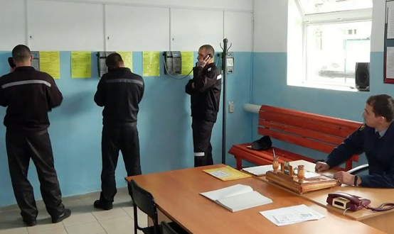

Общие начала назначения наказания
Порядок назначения уголовного наказания регулируется гл. 10 УК РФ. В ней установлены следующие общие начала (правила определения мер наказания):
1) наказание должно быть установлено с учетом характера и степени общественной опасности преступления и личности виновного, в том числе обстоятельств, смягчающих и отягчающих наказание, а также влияния назначенного наказания на исправление осужденного и на условия жизни его семьи;
2) наказание должно быть справедливым, т.е. соответствовать тяжести совершенного лицом деяния;
3) наказание должно находиться в пределах, предусмотренных соответствующей статьей Особенной части УК РФ. Более строгий вид наказания из числа предусмотренных за совершенное преступление назначается только в случае, если менее строгий вид наказания не сможет обеспечить достижение целей наказания, по совокупности преступлений и по совокупности приговоров;
4) суд должен определить целесообразность применения дополнительных видов наказаний в дополнение к основному: во многих статьях УК РФ предусмотрена возможность назначения конкретных дополнительных наказаний, но есть и статьи, в которых дополнительные наказания устанавливаются императивно к основному (например, за получение взятки (ст. 290 УК РФ) лишению свободы должно обязательно сопутствовать лишение права занимать определенные должности или заниматься определенной деятельностью).
Помимо общих начал, УК РФ предусмотрел и специальные правила назначения наказания, действующие в отдельных случаях:
1) при наличии смягчающих обстоятельств (ст. 62 УК РФ) и в отсутствие отягчающих обстоятельств:
- срок или размер наказания не могут превышать двух третей максимального срока или размера наиболее строгого вида наказания, предусмотренного соответствующей статьей УК РФ (не распространяется на статьи, которыми предусмотрены пожизненное лишение свободы или смертная казнь);
- в случае заключения досудебного соглашения о сотрудничестве – срок или размер наказания не могут превышать половины максимального срока или размера наиболее строгого вида наказания, предусмотренного соответствующей статьей УК РФ (если статьей предусмотрены – не более двух третей максимального срока или размера наиболее строгого вида наказания в виде лишения свободы);
2) назначение более мягкого наказания, чем предусмотрено за данное преступление (ст. 64 УК РФ) – при наличии исключительных обстоятельств, связанных с целями и мотивами преступления, ролью виновного, его поведением во время или после совершения преступления, и других обстоятельств, существенно уменьшающих степень общественной опасности преступления, а равно при активном содействии участника группового преступления раскрытию этого преступления:
- наказание может быть ниже низшего предела, предусмотренного соответствующей статьей УК РФ, или суд может назначить более мягкий вид наказания, чем предусмотрен этой статьей, или не применить дополнительный вид наказания, предусмотренный в качестве обязательного (не распространяется на преступления против общественной и государственной безопасности);
3) при вердикте присяжных заседателей о снисхождении (ст. 65 УК РФ):
- срок или размер наказания не может превышать двух третей максимального срока или размера наиболее строгого вида наказания, предусмотренного за совершенное преступление;
- смертная казнь или пожизненное лишение свободы не применяются;
- обстоятельства, отягчающие наказание, не учитываются;
4) за неоконченное преступление (ст. 66 УК РФ):
- срок или размер наказания за приготовление к преступлению не может превышать половины максимального срока или размера наиболее строгого вида наказания, предусмотренного за оконченное преступление;
- срок или размер наказания за покушение на преступление не может превышать трех четвертей максимального срока или размера наиболее строгого вида наказания, предусмотренного за оконченное преступление;
- смертная казнь и пожизненное лишение свободы не назначаются;
5) за преступление, совершенное в соучастии (ст. 67 УК РФ):
- учитываются характер и степень фактического участия лица в его совершении, значение этого участия для достижения цели преступления, его влияние на характер и размер причиненного или возможного вреда;
- смягчающие или отягчающие обстоятельства, относящиеся к личности одного из соучастников, учитываются при назначении наказания только этому соучастнику;
6) при рецидиве преступлений (ст. 68 УК РФ):
- учитываются характер и степень общественной опасности ранее совершенных преступлений, обстоятельства, в силу которых исправительное воздействие предыдущего наказания оказалось недостаточным, а также характер и степень общественной опасности вновь совершенных преступлений;
- при отсутствии смягчающих обстоятельств срок наказания не может быть менее одной третьей части максимального срока наиболее строгого вида наказания, предусмотренного за совершенное преступление, но в пределах санкции соответствующей статьи УК РФ;
- при наличии смягчающих обстоятельств срок наказания может быть назначен менее одной третьей части максимального срока наиболее строгого вида наказания, предусмотренного за совершенное преступление, но в пределах санкции соответствующей статьи УК РФ;
- при наличии исключительных обстоятельств может быть назначено более мягкое наказание, чем предусмотрено за данное преступление;
7) по совокупности преступлений (ст. 69 УК РФ):
- наказание назначается отдельно за каждое совершенное преступление;
- если все преступления, совершенные по совокупности, являются преступлениями небольшой или средней тяжести, либо приготовлением к тяжкому или особо тяжкому преступлению, либо покушением на тяжкое или особо тяжкое преступление, окончательное наказание назначается путем поглощения менее строгого наказания более строгим либо путем частичного или полного сложения назначенных наказаний. При этом окончательное наказание не может превышать более чем наполовину максимальный срок или размер наказания, предусмотренного за наиболее тяжкое из совершенных преступлений;
- если хотя бы одно из преступлений, совершенных по совокупности, является тяжким или особо тяжким преступлением, то окончательное наказание назначается путем частичного или полного сложения наказаний. При этом окончательное наказание в виде лишения свободы не может превышать более чем наполовину максимальный срок наказания в виде лишения свободы, предусмотренный за наиболее тяжкое из совершенных преступлений;
8) по совокупности приговоров (ст. 70 УК РФ):
- к наказанию, назначенному по последнему приговору суда, частично или полностью присоединяется неотбытая часть наказания по предыдущему приговору суда;
- окончательное наказание в случае, если оно менее строгое, чем лишение свободы, не может превышать максимального срока или размера, предусмотренного для данного вида наказания Общей частью УК РФ;
- не может превышать тридцати лет в виде лишения свободы, за преступления против общественной и государственной безопасности – тридцати пяти лет;
- окончательное наказание должно быть больше как наказания, назначенного за вновь совершенное преступление, так и неотбытой части наказания по предыдущему приговору суда;
9) лицу, признанному больным наркоманией (ст. 72.1.УК РФ) – при назначении основного наказания в виде штрафа, лишения права занимать определенные должности или заниматься определенной деятельностью, обязательных работ, исправительных работ или ограничения свободы суд может возложить на осужденного обязанность пройти лечение от наркомании и медицинскую и (или) социальную реабилитацию.
Определение сроков наказаний и зачет наказания
Исчисление сроков наказаний и зачет наказания (ст. 72 УК РФ) подчиняются следующим правилам:
а) сроки лишения права занимать определенные должности или заниматься определенной деятельностью, исправительных работ, ограничения по военной службе, ограничения свободы, принудительных работ, ареста, содержания в дисциплинарной воинской части, лишения свободы исчисляются в месяцах и годах, а обязательных работ – в часах; при замене или сложении данных наказаний сроки наказаний могут исчисляться в днях. При этом двести сорок часов обязательных работ соответствуют одному месяцу лишения свободы или принудительных работ, двум месяцам ограничения свободы, трем месяцам исправительных работ или ограничения по военной службе;
б) время содержания лица под стражей до вступления приговора суда в законную силу засчитывается в сроки содержания в дисциплинарной воинской части из расчета один день за полтора дня, ограничения свободы, принудительных работ и ареста - один день за два дня, исправительных работ и ограничения по военной службе - один день за три дня, а в срок обязательных работ - из расчета один день содержания под стражей за восемь часов обязательных работ, в срок лишения свободы – один день за один день отбывания наказания в тюрьме либо исправительной колонии строгого или особого режима; за полтора дня отбывания наказания в воспитательной колонии либо исправительной колонии общего режима; за два дня отбывания наказания в колонии-поселении;
в) время нахождения лица под домашним арестом засчитывается в срок содержания лица под стражей до судебного разбирательства и в срок лишения свободы из расчета два дня нахождения под домашним арестом за один день содержания под стражей или лишения свободы.